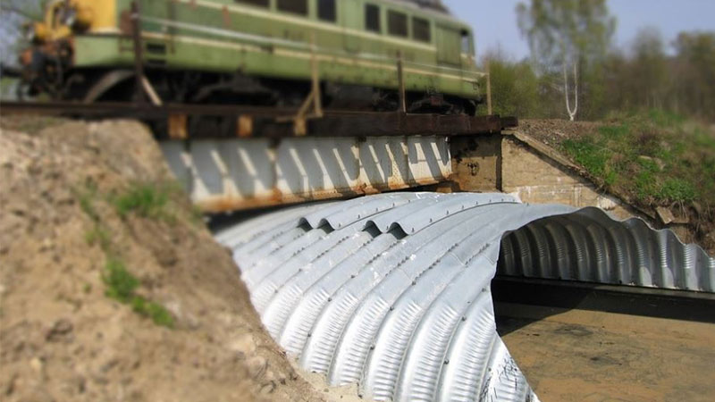
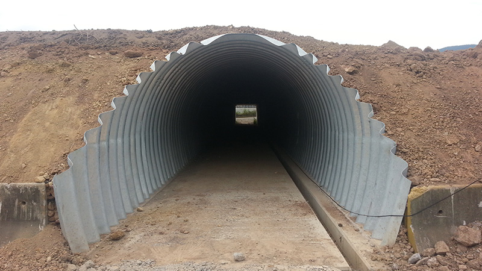
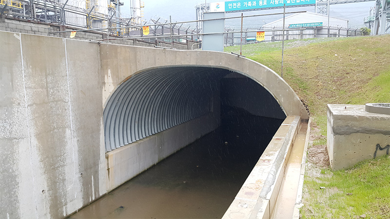
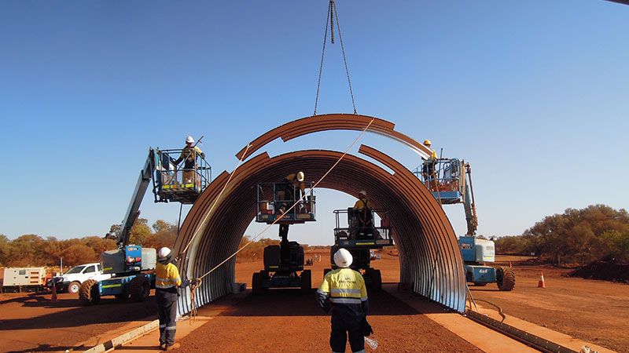
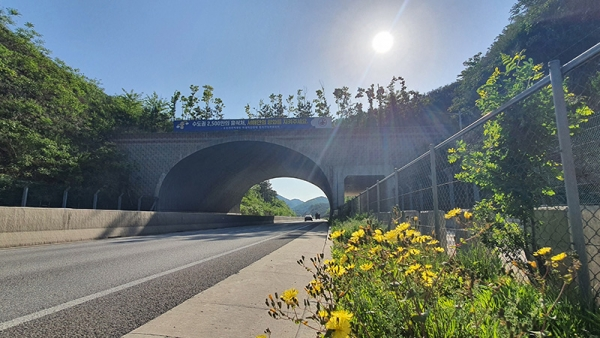
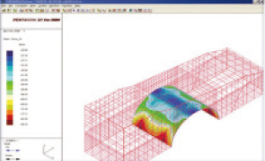
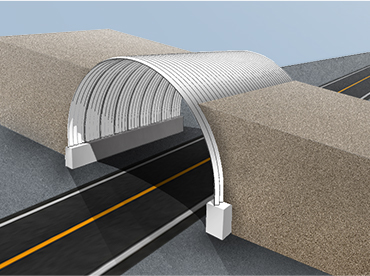

01 / STRUCTURE
지반과 함께 지지
강재와 주변 지반의 상호작용을 활용합니다.

통수로와 생태통로, 교량과 광산까지. 다양한 현장을 연결하는 파형강판 구조.
파형강판은 강판에 파형을 성형한 구조용 재료입니다. 주변 지반과 상호작용하며 지중 구조물의 하중을 지지합니다.
강재와 주변 지반의 상호작용을 활용합니다.

현장의 형상과 용도에 맞는 아치·원형 등 다양한 구조물에 적용합니다.

통수로, 생태통로, 교량, 광산과 방호구조물 등에 활용됩니다.
보수·보강부터 통수로·암거, 광산, 탄약고, 생태통로와 교량까지. 사진을 한곳에 모아 용도별로 바로 볼 수 있습니다.
노후 통로·암거·소교량 안쪽에 파형강판 라이너를 조립해 보강하는 방식입니다. 구조물 상태와 남는 통수 단면, 충전·그라우팅 및 시공 순서를 함께 검토합니다.



도로 횡단 배수와 하천·수로 연결에 적용한 시공사례입니다. 아치 형상과 기초, 입출구 및 뒤채움 과정을 함께 살펴보세요.




광산용 파형강판 구조물의 전경부터 아치 인양·현장 조립·뒤채움까지 소개합니다.
GS 의뢰 현장 · Newman, Western Australia





아치 조립, 복토 후 외관, 내부 공간을 보여주는 이글루 탄약고 시공사례입니다. 시설 정보는 비식별 상태로 소개하며, 적용은 해당 시설의 설계·시방에 따릅니다.


생태통로와 생태터널의 실제 적용 모습입니다. 주변 지형과 도로, 내부 통로의 연결을 확인할 수 있습니다.



소교량과 도로 하부 통과 구조물의 시공사례입니다. 현장에 맞춘 형상과 조립 구성을 보여줍니다.


형상과 설계 조건을 확인하고 구조검토·도면·시공 지원으로 이어집니다.
기존 렉스틸 홈페이지 제품 소개에 수록된 기본 규격입니다. 적용 규격과 공급 범위는 프로젝트 조건에 맞춰 확인해 주세요.
| 두께(t) | 골의 넓이(p) | 골의 깊이(d) |
|---|---|---|
| 3.4~9.0mm | 381mm | 140mm |
현장의 지반·하중·배수 조건과 시공순서를 함께 검토합니다.

용도, 경간·높이, 복토와 하중, 지반 조건을 확인합니다.

설계에 맞는 강판을 제작하고 현장 조립과 접합을 검토합니다.

시공계획에 따라 뒤채움·다짐 및 변형 관리를 검토합니다.
제품과 설계, 시공에 대해 편하게 문의해 주세요.